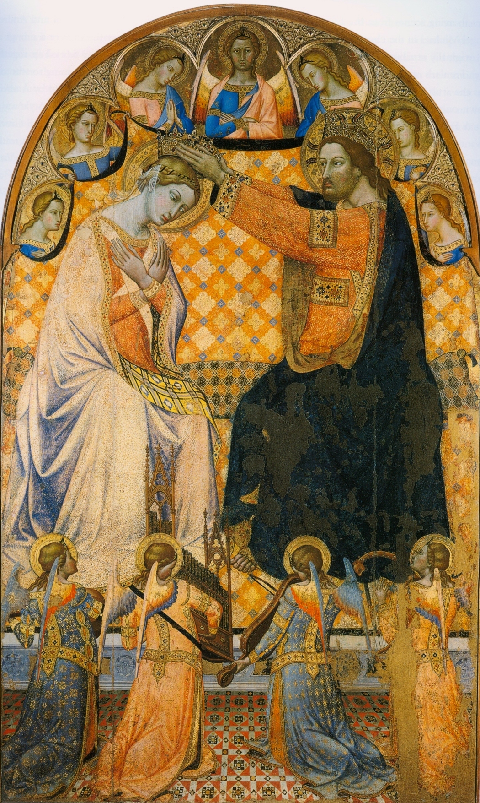

Daily Rosary
Today's Mystery
A daily point of entry for prayer, attention, and one small resolution.

Daily Rosary
A daily point of entry for prayer, attention, and one small resolution—then the full text to pray through.
A daily point of entry for prayer, attention, and one small resolution.